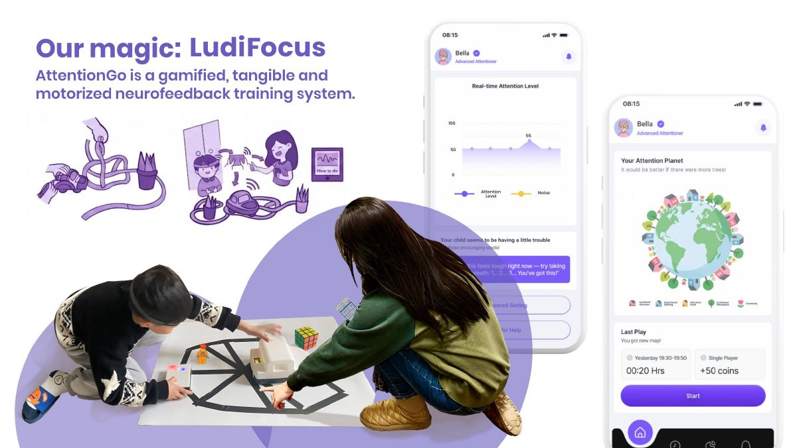
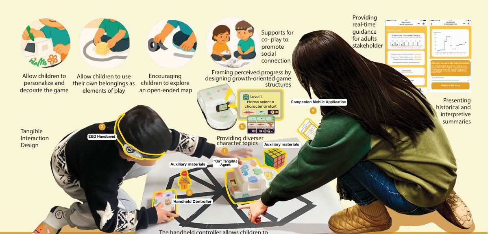
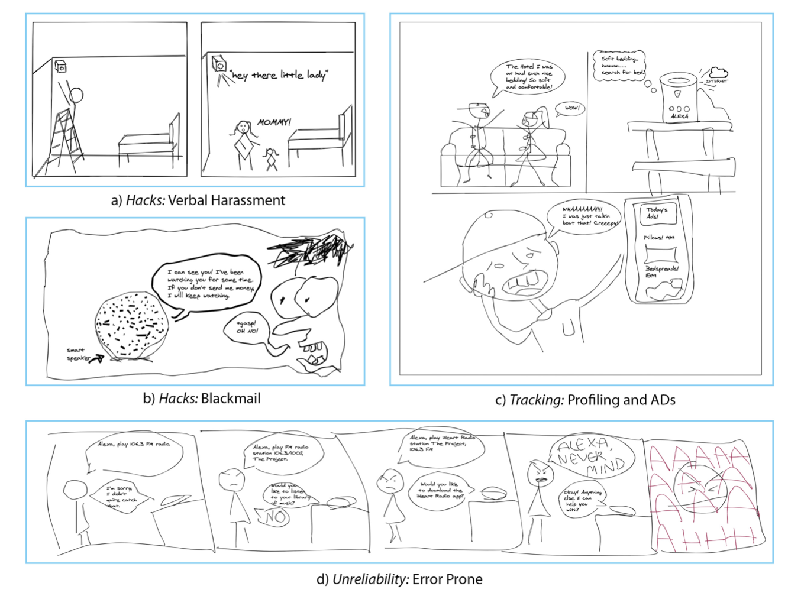
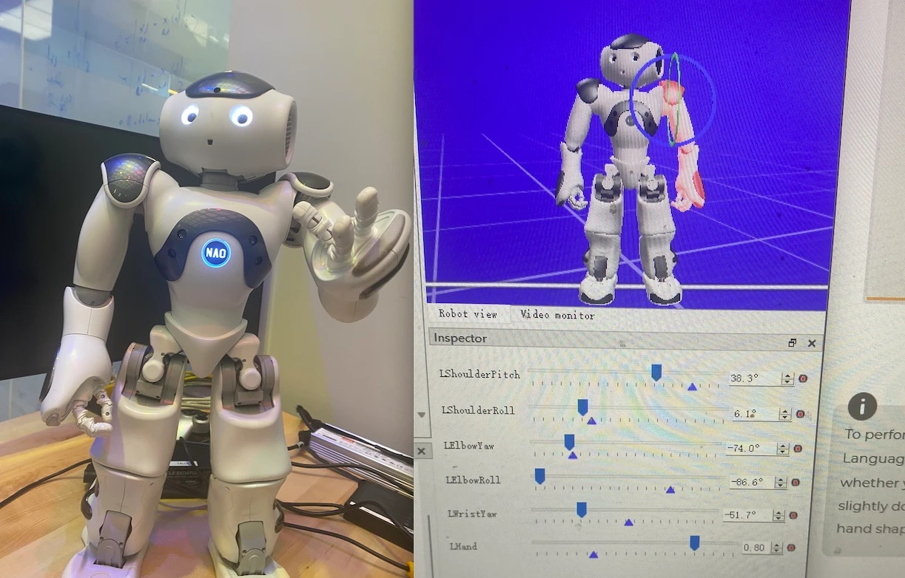
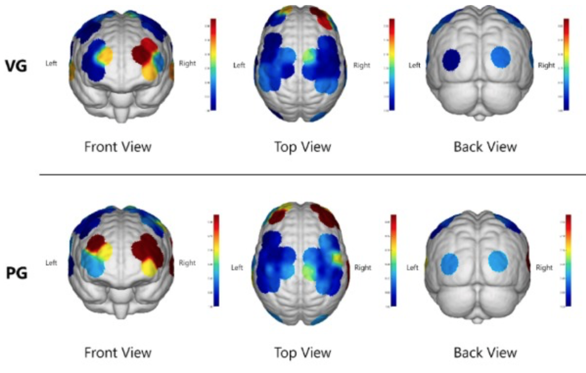

TITLE: From Training to Understanding Attention: Co-Designing Neurofeedback with Children with ADHD (Under Review, CHI '27)
Authors: Chen An Bella et al.
A co-design study with 18 families of children with ADHD across 33 participatory design workshops, analyzed with reflexive thematic analysis, proposing seven child-centered design guidelines for future brain-computer interfaces.

TITLE: AttentionGo: Designing Tangible Neurofeedback Tools for Children with ADHD through a Holistic Well-being Lens (DIS WIP '26)
Authors: Chen An Bella, James R. Wallace, Leah Zhang-Kennedy
Neurofeedback training (NFT) has gained traction as a non-pharmacological intervention for children with ADHD, yet most existing systems are designed from a neurotypical perspective that neglects the well-being of neurodivergent users. To address this gap, this paper presents AttentionGo, a tangible neurofeedback system grounded in Self-Determination Theory (SDT), which informs its core design strategies.

TITLE: Folk Tales of IoT: Understanding the Impact of Stories on Users' Positive and Negative Perceptions of Smart Home IoT Devices (CHI '25)
Authors: Leah Zhang-Kennedy, Michaela Valiquette, Chen An Bella et al.
This study examines how anecdotal stories from friends, peers, and online sources influence non-experts’ perceptions and behaviors toward smart home IoT devices. We surveyed 263 participants, collecting narratives that either positively or negatively influenced their perception of IoT devices, which they retold in text and comic formats to encourage deeper reflection. Thematic analysis of the narratives, combined with quantitative survey data, reveals that stories significantly impact trust and willingness to use and adopt IoT devices. Negative stories, particularly those concerning security, privacy, and device unreliability, reduced trust and usage, while positive stories about home safety through monitoring and improved quality of life increased interest in IoT devices. Perceptions of different IoT devices varied based on the themes associated with the stories. The findings highlight the powerful role of storytelling in driving consumer acceptance of technology.

TITLE: Toward Safe Child-Robot Interactions: Exploring Children's and Parents' Privacy Perceptions of Humanoid Social Robots (ICSR 2025)
Authors: JaeEun Jen Shin, Amr Hamdi, Chen An Bella, Yue Hu, Leah Zhang-Kennedy
As humanoid social robots (HSRs) become more integrated into family environments, it is crucial to examine privacy concerns in child-robot interaction. This study examines how children and parents perceive privacy risks associated with HSRs, focusing on differences in their comfort levels across various usage scenarios. We conducted a user study with 38 parent-child dyads interacting with the HSR "NAO" using pre-programmed activities. Our findings revealed disparity in robot likability, smartness, and trustworthiness. These characteristics also influenced children's willingness to share personal information (secrets). Parents and children showed significant differences in their comfort levels with sensor usage across different contextual scenarios, where parents expressed concerns about data collection, storage, and transfer, preferring supervised interactions.
TITLE: Not a Playroom, but a Passage: Exploring the Design Space of a Technology-Mediated Calm-Down Corner (CHI EA '24)
Authors: Gao J, Chen An Bella, Yi Z, et al.
Preschool educators play an important role in supporting children’s emotion regulation capacities in ways that promote their socio-emotional and behavioral health. However, tracking children’s emotional changes and giving timely intervention to every child in the class simultaneously is challenging for preschool educators. In this paper, we use the "calm-down corner," which is widely used in classrooms with spaces where children can regain emotional control, as a probe to explore the design space of technology-supported preschool educators dealing with children’s emotional problems through one semi-structured interview with ten preschool educators and one co-design session with another 12 preschool educators. We summarized current challenges and the design considerations from preschool educators’ perspective, which could offer valuable insights for technology-enabled systems to facilitate the emotion regulation process for educators in the future.

TITLE: Exploring the Effects of Different BCI-Based Attention Training Games on the Brain: A Functional Near-Infrared Spectroscopy Study (Neuroscience Letters, 2024)
Authors: Chen An Bella, Song Hao, et al.
BCI games have been widely employed as non-invasive therapeutic interventions for conditions, but their efficacy remains a subject of debate. This study explores the efficacy of two prevalent forms of Brain-Computer Interface (BCI)-based attention training games: video games (VG) and physical games (PG). The effectiveness of these games has been examined through the lens of neuroscience, using functional Near-Infrared Spectroscopy (fNIRS) to monitor cortical activation. After the fNIRS test, subjects completed an Intrinsic Motivation Inventory (IMI) questionnaire. PG tasks activated six channels (L-PFC, R-PFC and R-TL), while VG tasks activated only one (R-PFC). Furthermore, females exhibited stronger activation during PG tasks, while males had none in either. Our findings suggest that under equivalent game rules and themes, PG may prove more effective for cognitive rehabilitation than VG, with stronger intrinsic motivation. We also found this result may exhibit gender differences. Finally, this research offers valuable insights for the future design of BCI-based games from a neuroscience perspective.